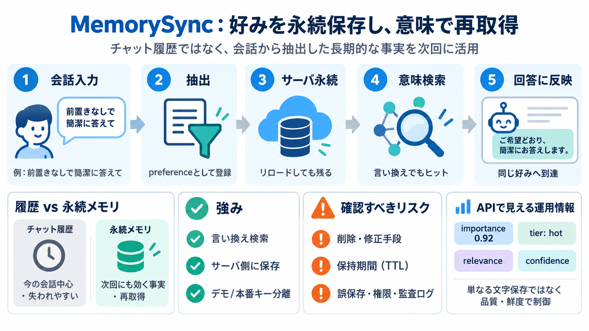

Playground – Persistent AI Agent Memory in Your Browser | MemorySync
2 · Keep it After you create a key, add your email here. The same key keeps working and stops expiring, and your accoun…

提示データは、AIの「好み（パーソナライズされた事実）」をサーバ側に永続保存し、言い換え検索で再取得できることを、PlaygroundとAPIレスポンスで示しています。
チャット履歴は会話文そのもの（セッションでリセットされがち）。永続メモリは、会話から抽出した長期的な事実を保存し、次回に呼び出します（MemorySyncは後者のデモ）。
毎回の会話で同じ希望（例：答えは前置きなしで簡潔に）が必要だと、体験は不安定になります。MemorySyncは、その希望を“学習済みの事実”として安定化させます。
保存された「Prefers concise answers with no preamble（前置きなしで簡潔な回答を好む）」は、単語一致ではなく意味（semantic）に基づく検索で再取得されます。
「ブラウザ内に保存していない」ため、ページリロードで状態は失われても、サーバ側の永続メモリは残ります。再問い合わせすれば返ってくる設計です。
デモキーと本番キーはプライバシーと適用範囲が分かれます。デモはMemorySync側のデモアカウント、保存済みデータは本番キー作成後に自分のアカウントへ引き継がれる前提です。
APIレスポンスには抽出（preference）・重要度・ティア（hot）などの運用情報が含まれます。これにより、単なるテキスト保存ではなく、品質と鮮度で取り出しを制御していることが分かります。
レスポンスにある評価指標（relevance / confidence 等）が示す通り、保存・検索・ランキングのパイプラインが前提にあります。ユーザーの自然な入力から“関連度の高い好み”へ到達します。
この仕組みは、毎回の会話文脈をそのまま引き継ぐのではありません。会話から抽出した安定した事実を保存し、次のセッションで必要に応じて呼び出します。
最大の強みは「リロード後も返る」「言い換えで検索できる」「ブラウザではなくサーバ側に保存」の3点が、デモとAPI構造で確認できることです。一方、失敗例やガバナンス詳細（削除・暗号化・監査ログ等）が不足しています。
永続メモリは便利ですが、保持期間・削除・誤学習の抑制・権限管理が欠けるとリスクになります。提示データでは詳細が見えにくく、追加確認が必要です。
MemorySyncは「好みを永続保存し、意味ベースで再取得する」設計デモです。採用判断では、成功の観測に加えて、誤保存・削除・権限・保持ポリシーまで確認するのが重要です。
2 · Keep it After you create a key, add your email here. The same key keeps working and stops expiring, and your accoun…
### Transcript [0:11] AIエージェントに記憶を持たせるツール、種類多すぎない？ 最近めっちゃ乱立してるよね。 名前も似てるし、どれがどう違うのかさっぱりなのです。 [0:19] 名前が似てても、中身の作りは全然違ったり…
Star62,590 Get Started DEVELOPERS uiw RESOURCES uiw PRICING USECASES uiw COMPANY uiw Star62,590 pricing\_pri…
| | 無料枠 | 有料枠、100 万トークンあたりの料金（米ドル） | --- | 入力価格 | 無料 | 利用不可 | | 出力価格 | 無料 | 利用不可 | | コンテキスト キャッシュ保存の料金 | 無料 | 利用不可 | …
これに対して長期記憶は、スレッドをまたがってやり取りの履歴やユーザーの好み等を保持します。 LLMはこれを利用することで、より人間に近い自然な会話を実現できます。 LangChainが提供するLangMem SDKは、この長期記憶を…